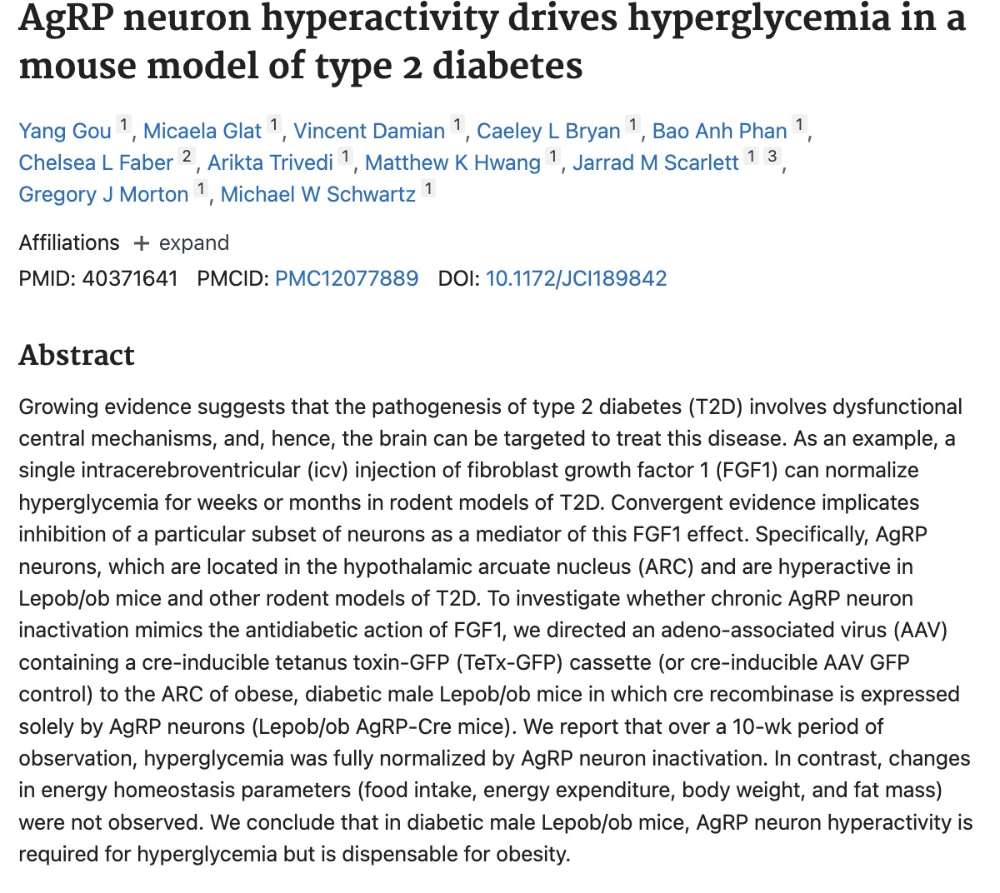
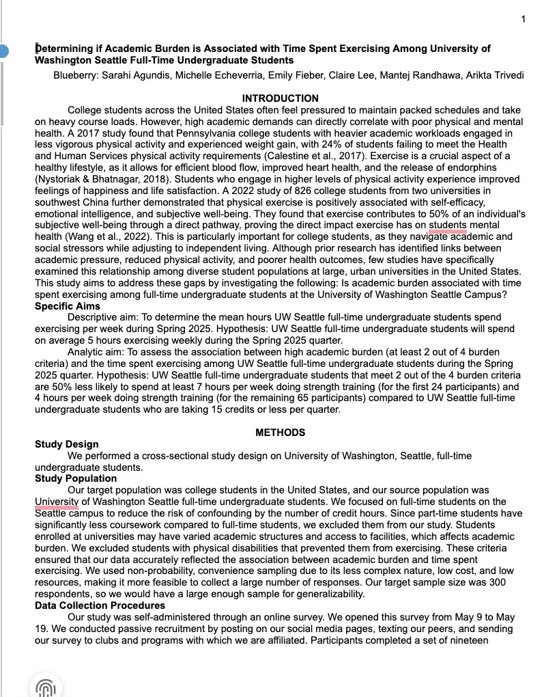
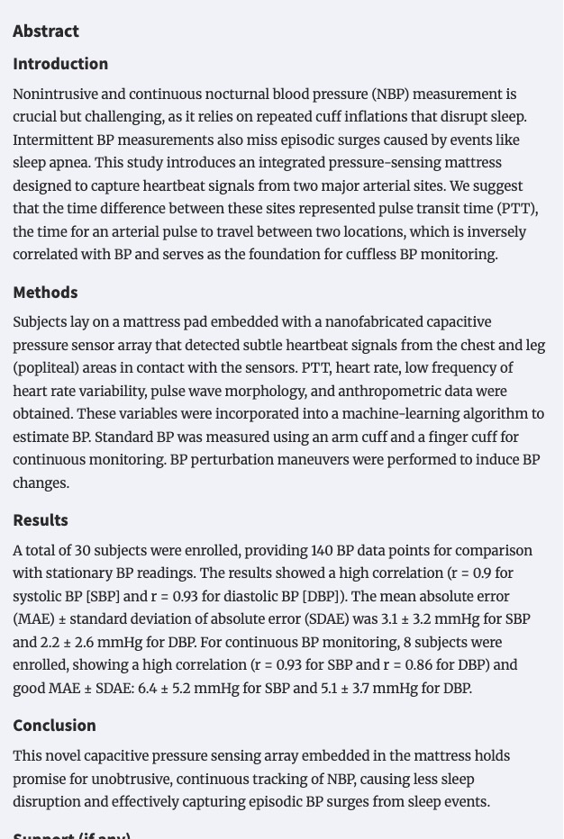

Evidence of Work Portfolio
Arikta Trivedi
Pre-medicine · Public Health · University of Washington
About Me
Hi, I'm Arikta.
I'm a pre-medicine student at the University of Washington Seattle, studying Public Health. My path toward medicine has been shaped by experiences across three worlds I care deeply about: community health education, research, and direct patient care. Each of those spaces has taught me something different about what it actually means to be in healthcare.
I grew up drawn to science and people in equal measure, and medicine felt like the place where those two things could genuinely meet. Over the past few years, I've facilitated neuroscience lessons for K–12 students, worked in a basic science research lab studying metabolic disease, co-led a stem cell donor registry on campus, worked as an event EMT, and conducted clinical research at Harborview Medical Center. Each of these experiences has pushed me, confused me, and ultimately clarified what kind of physician I want to be.
What ties all of it together is a belief that good medicine — and good healthcare — depends on trust, clarity, and meeting people where they are. Whether I was explaining a sheep brain dissection to a seventh grader, sitting outside a patient's room deciding whether to knock, or managing a medical emergency on a swinging rope bridge over a river, what mattered most was judgment, empathy, and presence.
This portfolio is a collection of the work that has gotten me here. Each piece reflects something I genuinely experienced and something I'm still learning from.
Community-Based Health Education Outreach
Outreach
Breaking neuroscience barriers · Grey Matters · K–12
Making Neuroscience Relevant Through Community Outreach
Through Grey Matters neuroscience outreach, I helped plan and facilitate interactive lessons for K–12 students, including sheep brain dissections and hands-on demonstrations. My role often involved working with small groups of students, answering questions as they came up, and adjusting explanations on the spot based on what students already knew. Many of the schools we visited served students with limited access to hands-on science education, and some classrooms included many non-English-speaking students. That made it especially important to present neuroscience in ways that felt approachable and connected to students' everyday lives rather than overwhelming or abstract.
This work mattered to me from a public health perspective because early exposure to science and health education shapes who feels included in these fields later on. I saw firsthand how barriers like language, lack of resources, and limited exposure can make science feel inaccessible. Bringing interactive neuroscience lessons into classrooms helped counter some of those barriers by giving students direct, engaging experiences with scientific material and college students they could relate to. It also reinforced for me that health communication is not just about delivering information, but about making people feel capable of understanding it.
Through this experience, I developed practical skills in science communication, facilitation, and adaptability. I learned how to prioritize clarity over completeness, read student engagement, and pivot when something wasn't landing. For example, I often connected brain structures to sports, movement, or injury when working with students who were athletes, which made the material more relevant to them. These skills now show up in other parts of my life, including peer facilitation, research discussions, and everyday conversations about science. Overall, this outreach confirmed my interest in community-engaged public health education and the role it plays in expanding access and inclusion.
Artifact

This image shows an outreach activity at Brain Fest held by the Pacific Science Institute.
Learning patient autonomy through NMDP · Promoting patient autonomy · Co-President
Mobilizing Community Action Through Stem Cell Donor Outreach
I first became involved with stem cell donor drives through the National Marrow Donor Program because, as someone who hopes to work in healthcare as a physician, I was looking for ways in undergrad to make a real impact. When I first heard patient stories about individuals whose lives were saved by a stem cell transplant, the work felt immediate and meaningful. Joining the registry is something ordinary people can do that has life-changing consequences for someone else. That idea stayed with me. As I became more involved, I took on leadership responsibilities and helped organize recruitment events on campus. I coordinated logistics, managed volunteers, and spent a lot of my time having one-on-one conversations with students about what stem cell donation actually involves.
After hearing patient stories and becoming more involved, I first served as Social Media Chair, where I focused on expanding our reach and increasing awareness about stem cell donation. Later, as Co-President, I had more influence over how we structured our donor drives and volunteer training. Early on, I was focused on numbers and growth, and I remember thinking, why would anyone not sign up? During donor drives, there was a strong emphasis on numbers, on getting as many people onto the registry as possible. Over time, that mindset shifted for me. I saw how differently people responded to the same information. Some students were immediately ready to register, while others hesitated because they were afraid of needles or unsure what donation would require. I realized that it is not a small commitment. If someone matches with a patient, they may be that person's only match. We don't want people backing out because they feel overwhelmed or misinformed. That realization changed how I crafted outreach strategies. I stopped thinking about recruitment as persuasion and started thinking about it as education. My approach became less about convincing and more about making sure people understood the process well enough to make an informed decision.
From this experience, I learned that community-based health work depends on trust and transparency. Public health initiatives only succeed when people feel respected and fully informed. Through NMDP, I learned that education is not just a step in the process. It is the foundation of ethical participation. Seeing the impact of donation through patient stories and meeting individuals whose cancer was cured through a transplant made the responsibility feel real. This experience strengthened my commitment to patient autonomy and reinforced that informed consent begins long before someone even enters a clinical setting.
Artifact

This is one of our biggest events of the year in collaboration with UW Athletics. It's an event I spent a lot of time planning and volunteering at, and our hard work paid off because we got more than 100 registrations in one day!
Health Research & Data Analysis
Research
Lab Research · Mouse Models · Metabolic Disease
Exploring Metabolic Disease Through AgRP Neuron Research
I worked on a laboratory research project investigating the role of agouti-related peptide (AgRP) neurons in metabolic regulation using mouse models. My responsibilities included collecting metabolic measurements, preparing brain tissue through freezing and sectioning, performing immunohistochemistry, and supporting experiments related to feeding behavior and glucose regulation. At first, much of the work felt procedural, like I was just following protocols without fully understanding how each step fit into the larger research question.
Over time, the purpose of the work became clearer, especially when I began to see stained brain sections under the microscope and connect those images to blood glucose data and graphs. This research is important because metabolic diseases like diabetes are often framed as disorders of peripheral organs, yet growing evidence shows that the brain plays a significant role in regulating energy balance and glucose homeostasis. Being part of a project that examined neural mechanisms of metabolic disease helped me see how basic science research contributes to broader public health questions about prevention, treatment, and access to care.
Through this experience, I gained technical lab skills and a deeper understanding of how evidence is generated. I learned that research is iterative and often an uncomfortably long and non-gratifying experience. Experiments don't always work, data take time to make sense, and progress depends on patience and collaboration. I also became more comfortable asking questions and admitting uncertainty, especially in a large lab setting. This project strengthened my critical thinking and helped solidify my interest in research that bridges neuroscience, physiology, and public health, particularly in the context of chronic disease.
Artifact · Published Manuscript

This manuscript represents my contribution to experimental data collection and analysis for this research project.
Navigating collaborative research · Mixed methods · SPH 480
Designing a Population Health Study on Academic Burden and Exercise
As part of a collaborative research project in SPH 480, I helped design and conduct a cross-sectional study examining whether academic burden was associated with time spent exercising among full-time undergraduate students at the University of Washington Seattle campus during Spring 2025. The research question was personally relevant to me, as I was navigating a demanding academic schedule while trying to maintain my own physical and mental health. Our group worked through all stages of the research process, including developing the research question, designing a survey, collecting data, and conducting analysis.
This project addressed a broader public health issue about how institutional structures, such as academic expectations, shape health behaviors. Rather than viewing exercise as an individual choice alone, the study highlighted how time pressure and academic demands can limit students' ability to prioritize physical activity. Understanding these dynamics is important for informing university-level policies and prevention efforts that support student well-being rather than placing responsibility solely on individuals.
Through this experience, I developed skills in collaborative research, variable operationalization, data cleaning, and both quantitative and qualitative analysis. Working closely with my group taught me how much research depends on communication and shared decision-making. I became more confident asking questions, contributing ideas, and engaging with feedback when aspects of the study were unclear. Interpreting our findings and connecting them to real-world implications strengthened my understanding of how population health research informs institutional and medical decision-making.
Artifact · Final Research Report

Determining if Academic Burden Is Associated with Time Spent Exercising Among University of Washington Full-time Undergraduate Students
SPH 480 · Spring 2025 · University of Washington Seattle
Clinical & Emergency Care Experience
Clinical
Event EMT · Clinical Judgment · Scope of Practice
Providing Emergency Care in Unpredictable Community Settings
I work as an event Emergency Medical Technician, providing on-site care at large public events. I pursued this role because I wanted more direct patient interaction and to experience what real-time medical decision-making actually feels like outside of a classroom to support my future career path as a physician. Event medicine is very different from hospital care. It often means working in crowded, loud, and unpredictable environments with limited equipment and support. My responsibilities include assessing patients, taking vital signs, stabilizing conditions when possible, and deciding whether a situation can be managed on site or needs to be escalated by calling 911.
One moment that stayed with me happened at a music festival when a patient passed out on a suspended wooden rope bridge over a river. The bridge was swinging, people were crossing from both sides, and loud music from a nearby stage made it difficult to communicate. Before even thinking about the patient assessment, I had to focus on securing the scene and making sure no one else was at risk. Taking a manual blood pressure while standing on a moving bridge forced me to narrow my attention and concentrate only on what was essential. That experience made me realize that clinical care is not just about knowing what to do. It is about judgment, prioritization, and staying calm enough to think clearly when everything around you feels chaotic.
The biggest lesson I have learned from this role is the importance of understanding the scope of practice. At events, we do not have access to the full range of hospital resources, and sometimes the most responsible decision is recognizing that a situation is beyond what we can safely manage and calling 911. Early on, I felt pressure to handle as much as possible on my own. Over time, I have learned that patient safety comes first, even if that means stepping back and involving a higher level of care. This experience has strengthened my confidence in decision-making while also teaching me humility. Good clinical care is not about proving you can handle everything. It is about knowing when to escalate and trusting the larger emergency response system.
Artifact

This is a picture of our setup at an outdoor music festival. It shows how non-traditional the environment is and how often we don't have all the supplies of a fully equipped ambulance.
Navigating clinical care in inpatient and outpatient settings · UW Harborview
Navigating Clinical Research and Patient Vulnerability at Harborview
I work on clinical cardiology research at UW Harborview Medical Center, focusing on studies related to sleep-disordered breathing and cardiovascular health. My responsibilities include reviewing patient charts to determine eligibility, approaching patients to explain the study and obtain consent, and teaching them how to use home-based monitoring devices such as a sleep ring or breathing monitor. Much of this work happens on inpatient units, where patients are recovering from serious injuries or managing complex medical conditions. Being part of research in that setting has shown me how closely scientific protocols and human experience intersect.
Through this work I've had to interact with a lot of patients, but one experience that I vividly remember was a day when I reviewed a patient's chart before entering the room and saw a long list of diagnoses and recent procedures. Technically, they met every eligibility criterion for the study. I decided to go see the patient anyways, but when I got to the door I felt a lot of hesitation. I could hear family members inside, and the patient had clearly been through a lot. When I introduced myself and explained the study, I could sense that it was not the right moment. The conversation was brief. They declined, and I left the room thinking about how easy it would be if eligibility was the only factor at play. That experience stayed with me. It made me more aware that patients are not just potential participants but individuals navigating stress, pain, and uncertainty.
The main takeaway from this experience for me was that good clinical research requires more than following a protocol. It requires situational awareness, empathy, and the judgment to recognize when to move forward and when to step back. At the same time, it also requires the willingness to enter spaces that feel uncomfortable. Early on, walking into hospital rooms alone felt intimidating, and there were moments when I questioned whether I belonged there. Learning to introduce myself confidently, explain the study clearly, and accept whatever decision followed helped me grow. Moving forward, I know this balance will matter in my future work in healthcare. Whether conducting research or caring for patients, I will need to recognize the context people are in, respect their autonomy, and still be willing to step into difficult conversations with professionalism and care.
Artifact · Published Abstract

This is an abstract published from some of the work I completed in the research lab, particularly the work I did with blood pressure measurements in patients with heart failure.
Thank you
Acknowledgements
None of this work happened alone. I'm grateful to every mentor, colleague, patient, and student who made these experiences possible and meaningful.
Grey Matters
Thank you to the Grey Matters team and every K–12 student who showed up with curiosity. Those classrooms reminded me why science communication matters.
Research Lab
To my PI and labmates — thank you for your patience as I learned, for answering every question, and for showing me what rigorous science looks like up close.
SPH 480 Team
To my research group — this project was better because of all of us. Thank you for the late nights, the shared confusion, and the shared excitement when things clicked.
NMDP / Stem Cell Club
To every volunteer, donor, and patient whose story shaped how I think about informed consent and community health. This work changed my perspective permanently.
EMT Team
To my fellow EMTs — thank you for teaching me how to stay calm, trust my training, and know when to ask for help. Patient safety first, always.
Harborview Research Team
To the team at Harborview and every patient who took the time to speak with me — thank you for showing me what it looks like when science and humanity meet.
Get in touch
Contact
I'm always happy to connect — whether it's about public health, medicine, research, or anything in between.